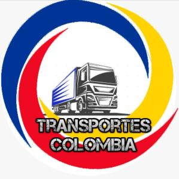

¿Qué es TranCol?
TranCol es una empresa de transportes del Euro Truck Simulator 2 multiplayer en donde todos los participantes pasamos un buen rato diviertiendonos mientras conducimos en el Euro Truck. Solo te pedimos compromiso y tiempo ya que hacemos convoys de martes a viernes a las 8:00PM, para entrar al la empresa puedes ingresar al servidor de discord y hablar con mr.trafic (Más información abajo)
